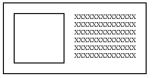
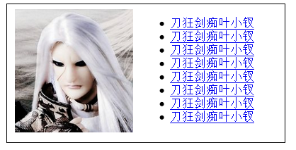

前言
连续学了两天javascript的东西了，我们都累了，于是今天还是上一套面试题吧，大家一起休息休息，也为下个星期可能会有的面试准备下。
题目一览
CSS
1. overflow-x 属于 CSS2 还是 CSS3
2. 请列举几种可以清除浮动的方法（至少两种）
3. display:none 和 visibility:hidden 的区别是什么
4. 请缩写以下代码：
.box {
background-position: 10px 20px;
background-repeat: no-repeat;
background-attachment: fixed;
background-color: red;
background-image: url(box.png);
}
5. 如何让一段文本中的所有英文单词的首字母大写
Javascript
1. 请解释一下什么是闭包
2. call 和 apply 的区别是什么
3. 如何使用原生 Javascript 代码深度克隆一个对象（注意区分对象类型）
4. jQuery 中 $('.class') 和 $('div.class') 在 IE 8 下哪个效率更高，请解释原因
HTML
1. 以下哪个不是 HTML5 的新标签：
a. <article>
b. <section>
c. <address>
d. <time>
2. 正确使用 HTML 和 CSS 实现以下效果（中间方框部分表示图片，右侧为文字列表。尽量不要
使用 float 属性）：
<ignore_js_op style='font: 14px/21px "Microsoft YaHei", Tahoma, sans-serif; color: rgb(68, 68, 68); text-transform: none; text-indent: 0px; letter-spacing: normal; word-spacing: 0px; white-space: normal; font-size-adjust: none; font-stretch: normal; background-color: rgb(255, 255, 255); -webkit-text-stroke-width: 0px;'>
简答
1. jumei.com 和 weibo.com 完整载入后，html 代码各有多少 KB
2. 最近关注了哪些前端相关的技术/博客/论坛，简述心得和看法
既然题目都搞来了，我们就认认真真的做下吧！
overflow-x 属于 CSS2 还是 CSS3
我在vs2010上面打到overflow的时候是没有overflow-x的提示，所以果断认为他是CSS3的属性，这个属性是用于控制横向滚动条的。
虽说是CSS3提出的属性，但是各个浏览器基本都支持了，所以可以认为是一个标准
visible：
不剪切内容也不添加滚动条。假如显式声明此默认值，对象将被剪切为包含对象的window或frame的大小。并且clip属性设置将失效
auto：
此为body对象和textarea的默认值。在需要时剪切内容并添加滚动条
hidden：
不显示超过对象尺寸的内容
scroll：
横向显示滚动条
列举几种可以清除浮动的方法（至少两种）
我们前面就说了，说清除浮动不太合理，因为float: none用于表示清楚浮动比较合理，所以我们这里可以改称其为闭合浮动。
float会破坏行内框inline boxes导致line boxes高度坍塌，所以我们需要闭合浮动，解决其引起的坍塌
闭合浮动只有两种方法：
① 添加新标签并为其设置clear: both
② 为父元素设置overflow触发器BFC，强制包裹浮动元素
我们在网上看到的所以方式都是以上的变形，我们理解以上即可，另外提一提其它的。
最经典的就是我们的clearfix了
1 .clearfix:after { 2 content: "."; 3 display: block; 4 height: 0; 5 visibility: hidden; 6 clear: both; 7 } 8 9 .clearfix { 10 *zoom: 1; 11 }
他这个说白了也是增加新标签的一种变形。
display:none 和 visibility:hidden 的区别
这两个家伙区别很大，他们都可以用于隐藏一个元素，但是不同的是：
display的方式将使元素脱离文档流，这种做法可能引起页面reflow，对性能不是很好，所以可以避免就避免吧。
visibility的方式隐藏了元素，但是他的空间还在。
简写CSS
.box {
background-position: 10px 20px;
background-repeat: no-repeat;
background-attachment: fixed;
background-color: red;
background-image: url(box.png);
}
.box { background: red url(box.png) no-repeat 10pz 20px fixed }
这个题出10个我都不怕。。。
让一段文本中的所有英文单词的首字母大写
这个题我不会，但是应该是CSS3里面一个新特性，最后查询了资料：
css的text-transform：none(默认值) | capitalize | uppercase | lowercase |
他可以干我们要的事情
什么是闭包
这个题基本是必问的，我们既然要作答，就好好答吧！
闭包实现原理
当某个函数调用时会创建一个执行环境以及作用域链，然后根据arguments和其它命名参数初始化形成活动对象。
在外部函数调用结束后，其执行环境与作用域链被销毁，但是其活动对象保存在了闭包之中，最后在闭包函数调用结束后才销毁
闭包的实现
在函数中定义函数，并且内部函数引用了外部函数的变量，最后内部函数被返回
闭包的作用
我们的函数可产生类似于块级作用域的东西，内部的变量外部不可访问，但是我们需要提供访问的接口，这个接口的实现便依赖于我们的闭包
闭包的问题
闭包的使用上需要注意，因为他会增大内存的负担，对性能有一点影响，另外闭包有可能会有一些容易出错的场景。
以上便是我对闭包的理解（若是此处要装B应该怎么做呢？）
call 和 apply 的区别是什么
call与apply是函数都具有的一个方式，其作用是可以改变其this的指向，其调用方式有所不同。
call传递参数，apply以数组形式传递与arguments是一对好基友，建议使用。
深度克隆一个对象
昨天才干了这个事情，深度克隆要使用到递归的思想：
1 function cloneObj(obj) { 2 var o = obj.constructor == Array ? [] : {}; //首先处理变量，看看是数组还是对象啦 3 for (var k in obj) { 4 //我们知道for in 会将原型的东西也给遍历出来，所以我们这里需要做一个判断 5 if (obj.hasOwnProperty(k)) { 6 //递归方式处理 7 o[k] = typeof obj[k] === 'objext' ? cloneObj(obj[k]) : obj[k]; 8 } 9 } 10 return o; 11 } 12 13 var a = { a: 'aaa', b: 'bbb', c: { d: 'ddd', e: [1, 2, 4]} }; 14 var b = cloneObj(a); 15 var s = '';
jQuery 中 $('.class') 和 $('div.class') 在 IE 8 下哪个效率更高
这个涉及到jquery的优化问题了，我们知道jquery选择器是由右向左找寻的
以上是先找寻class的标签，然后在class标签里面找寻只有div的标签，会找两次，应该是后面的高
PS：这道题我理解有问题，下来还有再研究一下
HTML5标签
1. 以下哪个不是 HTML5 的新标签：
a. <article>
b. <section>
c. <address>
d. <time>
abd，我写博客时候都用到过，就只有c没有，没法了只能选他了。
布局题
这个题比较简单，是很常见的两列布局，我们一直不推荐使用float，所以用inline-block实现吧：
1 <html xmlns="http://www.w3.org/1999/xhtml"> 2 <head> 3 <title></title> 4 <style> 5 .box { border: 1px solid black; width: 360px; height: 180px; } 6 .box img { height: 160px; margin-left: 10px; } 7 .box ul { display: inline-block; *display: inline; zoom: 1; vertical-align: 15px; } 8 </style> 9 </head> 10 <body> 11 <div class="box"> 12 <img src="1.png" alt="叶小钗" /> 13 <ul> 14 <li><a href="#">刀狂剑痴叶小钗</a></li> 15 <li><a href="#">刀狂剑痴叶小钗</a></li> 16 <li><a href="#">刀狂剑痴叶小钗</a></li> 17 <li><a href="#">刀狂剑痴叶小钗</a></li> 18 <li><a href="#">刀狂剑痴叶小钗</a></li> 19 <li><a href="#">刀狂剑痴叶小钗</a></li> 20 <li><a href="#">刀狂剑痴叶小钗</a></li> 21 <li><a href="#">刀狂剑痴叶小钗</a></li> 22 </ul> 23 </div> 24 </body> 25 </html>
具体实现时候一定要上机调试。

结语
今天我们又做了一道题，感觉难度不大，最后两道题属于开放型问题，我这里就不作答了，有兴趣他朋友可以留言。
若是您有好的题目，请留下再走